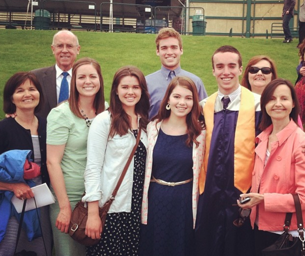

MARK SHERMAN EDUCATION

After graduating from Columbine High School in Littleton, Colorado in 2014, I began attending Brigham Young University in the fall of 2015. I am pursuing a Bachelor's degree in Computer Science with a minor in Mathematics. I look forward to finding my place within the programming world!
Current Related Courses Completed
- Introduction to Computer Programming
- Data Structures
- Discrete Structure (Currently Enrolled)
- Introduction to Web Programming (Currently Enrolled)
- Calculus 1 and 2
- Fundamentals of Mathematics
- Elementary Linear Algebra (Currently Enrolled)